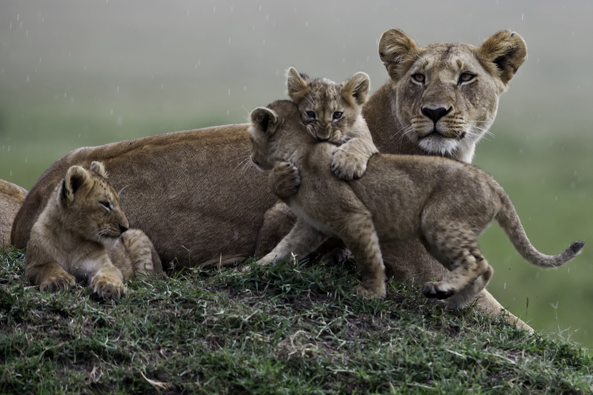
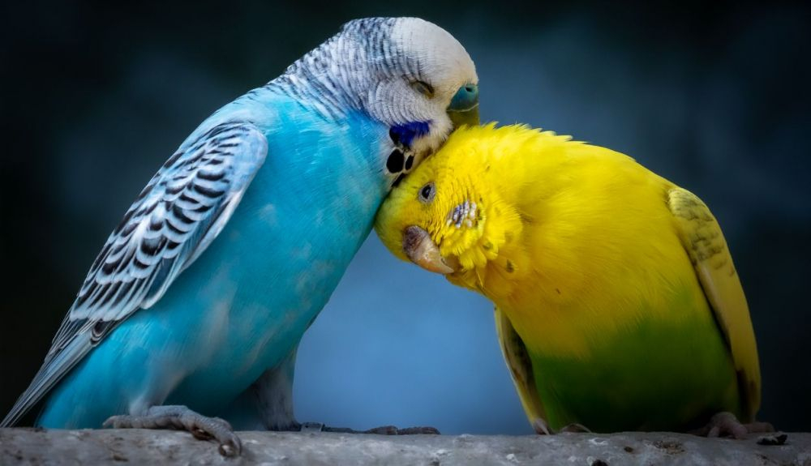
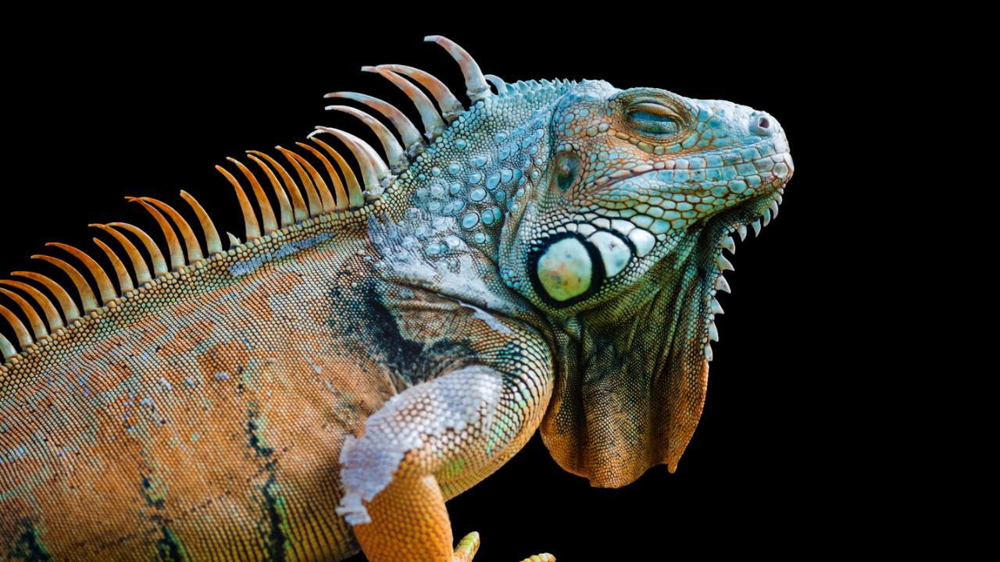
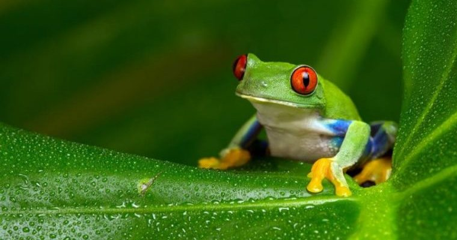

Los mamíferos son una clase de animales vertebrados amniotas homeotermos (de sangre caliente) que poseen glándulas mamarias productoras de leche con las que alimentan a las crías.
La gran mayoría de este grupo son vivíparos. Se trata de un taxón monofilético; es decir, todos descienden de un antepasado común que se remonta probablemente a finales del Triásico, hace más de 200 millones de años. Pertenecen al clado sinápsidos, que incluye a los mal llamados reptiles mamiferoides, un grupo de sinápsidos que no eran reptiles ni tampoco mamíferos, aunque estaban más relacionados con estos últimos que con los primeros, como los pelicosaurios y los cinodontos. Se conocen unas 5486 especies actuales, de las cuales 5 son monotrematas, 272 son marsupiales y el resto, 5209, son placentarios
CARACTERISTICAS
-Poseen glándulas sudoríparas, modificadas como glándulas mamarias, capaces de segregar leche, alimento del que se abastecen todas las crías de mamíferos. Esta es su característica principal, de la que derivan su nombre de mamíferos.
-La mandíbula está conformada solo por el hueso dentario, rasgo único y exclusivo de todos los mamíferos, constituyendo la principal característica diagnóstica para el grupo.
-Presentan siete vértebras en el segmento cervical de su columna vertebral; constante biológica que se verifica en especies tan disímiles como el ratón, la jirafa, el ornitorrinco o la ballena azul.
-La articulación de la mandíbula con el cráneo se efectúa entre el dentario y el escamosal, característica también única y exclusiva de los mamíferos.
-Presentan tres huesos en el oído medio: martillo, yunque y estribo, con excepción de los monotremas, que presentan el oído reptiliano.
-Los mamíferos tienen pabellones auriculares, excepto ballenas, delfines y otros que viven en el agua y que en su proceso evolutivo los han perdido por razones hidrodinámicas.
-Son los únicos animales actuales con pelo presente en casi todas las etapas de su vida, y todas las especies, en mayor o menor medida, lo tienen (aunque sea en estado embrionario).
-Al igual que sus primitivos ancestros, los mamíferos modernos poseen un solo par de fenestras temporales en el cráneo, a diferencia de los diápsidos (dinosaurios, reptiles modernos y aves), que presentan dos pares, y de los anápsidos (tortugas), que no tienen ninguno. Además de esta diferencia esquelética —y de otras menos significativas como la importancia del hueso dentario en la mandíbula inferior y la condición heterodonta o capacidad que tienen los dientes de cumplir distintas funciones—, las características principales de los mamíferos son la presencia de pelo y de glándulas de la piel.
Pero a pesar de estas y otras similitudes que no son definitorias de la clase, su diversidad es tal que son muchas más las diferencias existentes, especialmente en cuanto a aspecto externo se refiere.
Ejemplo de mamifero:

Aves
Aves es una clase de animales vertebrados que regulan su temperatura, que caminan, saltan o se mantienen solo sobre las extremidades posteriores, mientras que las extremidades anteriores han evolucionado hasta convertirse en alas que, junto con otras características anatómicas únicas, les permiten, a la mayor parte de ellas, volar, si bien no todas vuelan. Tienen el cuerpo cubierto de plumas y, las aves sensu stricto, un pico cónico sin dientes. Para reproducirse ponen huevos que incuban hasta su eclosión.
Las aves se originaron a partir de dinosaurios carnívoros bípedos del Jurásico, hace entre ciento cincuenta y doscientos millones de años y, de hecho, son los únicos dinosaurios que sobrevivieron a la extinción masiva producida al final del Mesozoico. Por tanto, la sangre caliente, que es la característica más notable que comparten con los mamíferos, es un resultado de evolución convergente, pues no existió un ancestro común a ambos grupos que tuviera este rasgo. Su evolución dio lugar, tras una fuerte radiación, a las más de diez mil especies actuales (más 153 extintas en tiempos históricos). Las aves son los tetrápodos más diversos; sin embargo, tienen una gran homogeneidad morfológica en comparación con los mamíferos. Las relaciones de parentesco de las familias de aves no siempre pueden definirse por morfología, pero con el análisis de ADN han empezado a esclarecerse.
CARACTERISTICAS
-Si bien no todas las especies de aves pueden volar (los pingüinos nadan, por ejemplo, y los avestruces corren), es uno de los rasgos distintivos de esta clase de animales, ya que la capacidad de desplazarse de un ecosistema a otro e incluso de proliferar en territorios aislados sin mayor competencia animal, permitió la enorme diversificación de las especies aviares.
-La dieta de las aves puede ser sumamente variada, oscilando entre néctar, frutas y vegetales, hojas y semillas, insectos, hongos, carroña y animales pequeños: peces, roedores, reptiles e incluso otras aves o sus huevos.
-Muchas aves prefieren una existencia solitaria o de núcleos familiares pequeños, sobre todo las dedicadas a la depredación. Mientras que la mayoría de las aves pequeñas se organiza en bandadas que pueden alcanzar proporciones importantes. Dada su alta capacidad de pensamiento inteligente, las aves son capaces de modos de socialización eficientes, en cuanto a comida y seguridad se refiere, y pueden incluso embarcarse en relaciones simbióticas o de comensalismo con miembros de otras especies, como lo hacen las garzas que se alimentan de los parásitos en el pelaje de mamíferos de gran tamaño.
-Las aves son ovíparas, de modo que una vez fecundada durante el coito, la hembra pone huevos provistos de un caparazón calcáreo, que luego son empollados hasta el instante de su eclosión. Lo interesante del coito de las aves son sus complejos rituales de apareamiento, en los que el macho usualmente atrae a la hembra haciendo gala de los colores de su plumaje, su canto e incluso construyendo el mejor nido posible con ramas y material que recoge de los alrededores.
-Muchas de las especies de aves migran, aprovechando la diferencia climática entre ambos hemisferios para optimizar sus fuentes de alimento o para llevar a cabo la temporada de cría. Algunas de esas migraciones son anuales, para lo cual los animales se preparan maximizando sus reservas de grasa y agua.
Ejemplo de ave:

Reptiles
Los reptiles son una clase de animales vertebrados amniotas provistos de escamas epidérmicas de queratina. Pertenece a la taxonomía tradicional, pero de acuerdo con la sistemática cladística actual, es un grupo parafilético, es decir, que no incluye a todos los descendientes del ancestro común (pues deja fuera a las aves y los mamíferos, por lo que no tiene valor filogenético desde el punto de vista de la Biología). Aunque una redefinición moderna de Reptilia es la que incluye a las aves, pero excluye a los sinápsidos, que condujeron a los mamíferos, ya que ha quedado demostrado que no eran reptiles.
CARACTERISTICAS
-Los reptiles son animales ovíparos, es decir, ponen huevos, aunque algunos reptiles son ovovivíparos, como ciertas serpientes, que dan a luz crías totalmente formadas. La fecundación es siempre interna. La cáscara de los huevos puede ser dura o apergaminada. En las hembras, los ovarios se encuentran “flotando” en la cavidad abdominal y poseen una estructura llamada conducto de Müller que segrega la cáscara de los huevos.
-Una de las características de los reptiles más destacada es que en ellos no existen glándulas mucosas en la piel que la protejan, solo escamas epidérmicas. Estas escamas se pueden disponer de distintas maneras: unas al lado de otras, solapadas, etc. Las escamas dejan una zona móvil entre ellas, llamada bisagra, para realizar el movimiento. Debajo de las escamas epidérmicas encontramos escamas óseas llamadas osteodermos, su función es que la piel sea más robusta.
-A diferencia de mamíferos o aves, el corazón de los reptiles solo posee un ventrículo, que en muchas especies comienza a tabicarse, aunque solo en crocodilianos está totalmente tabicado.
-Los reptiles no mastican la comida, por lo que aquellos que se alimentan de carne producen grandes cantidades de ácido en el tubo digestivo para favorecer la digestión, asimismo, este proceso puede durar varios días. Como información sobre los reptiles adicional, podemos decir que algunos tragan piedras de diversos tamaños porque les ayuda a triturar el alimento a nivel del estómago.
-Aunque anatómicamente el sistema nervioso de los reptiles presente las mismas partes que el sistema nervioso de los mamíferos, es mucho más primitivo. Por ejemplo, el cerebro de los reptiles no posee circunvoluciones, que son los surcos típicos de los cerebros y sirven para aumentar la superficie sin incrementar el tamaño o volumen del cerebro. El cerebelo, encargado de la coordinación y equilibrio, no presenta dos hemisferios y está muy desarrollado, al igual que los lóbulos ópticos.
-Los reptiles, al igual que otros muchos animales, poseen dos riñones que elaboran orina y una vejiga que la almacena antes de ser expulsada por la cloaca. Sin embargo, algunos reptiles no tienen vejiga y eliminan directamente la orina por la cloaca en lugar de almacenarla, siendo esta una de las curiosidades de los reptiles que pocos conocen. Por la forma de producción de la orina, los reptiles acuáticos producen mucho amoniaco que necesita ser diluido con el agua que beben casi continuamente. Por otro lado, los reptiles terrestres, con menor acceso al agua, transforman el amoniaco en ácido úrico que no necesita ser diluido, por lo que la orina de los reptiles terrestres es mucho más espesa, pastosa y blanca.
-Dentro de las características de los reptiles encontramos que pueden ser animales herbívoros o carnívoros. Los reptiles carnívoros pueden tener dientes afilados como los cocodrilos, dientes venenosos como las serpientes o un pico serrado como las tortugas. Otros reptiles carnívoros se alimentan de insectos, es el caso de los camaleones o salamanquesas.
Ejemplo de reptil:

Anfibios
Los anfibios son una clase de animales vertebrados anamniotas (sin amnios, al igual que los peces), tetrápodos, ectotérmicos, con respiración branquial durante la fase larvaria y pulmonar al alcanzar el estado adulto. A diferencia del resto de vertebrados, se distinguen por sufrir una transformación durante su desarrollo. (Este cambio puede ser largo y se denomina metamorfosis). Los anfibios fueron los primeros vertebrados en adaptarse a una vida semiterrestre, presentando en la actualidad una distribución cosmopolita al encontrarse ejemplares en prácticamente todo el mundo, estando ausentes solo en las regiones árticas y antárticas, en los desiertos más áridos y en la mayoría de las islas oceánicas. Hay descritas 7492 especies de anfibios. Se reconoce como anfibios a los anuros (ranas y sapos), caudados (ajolotes, salamandras y tritones) y a los gimnofiones (cecilias). Según la Lista Roja de 2021, el 41% de los anfibios están en peligro de extinción. Cumplen un rol ecológico vital respecto al transporte de energía desde el medio acuático al terrestre, así como a nivel trófico al alimentarse en estado adulto, en gran medida, de artrópodos y otros invertebrados. Algunas especies de anfibios secretan a través de la piel sustancias altamente tóxicas. Estas sustancias constituyen un sistema de defensa frente a los depredadores. Desde hace miles de años los anfibios han sido asociados con mitos y magia, enfocándose mucho de este folclore desde una perspectiva negativa. Por otra parte, existen culturas que han relacionado los anfibios con la fertilidad, la fortuna o la protección, entre otros aspectos beneficiosos.
CARACTERISTICAS
-Los anfibios poseen ciertas particularidades en sus modos de vida. A diferencia del resto de los tetrápodos, sufren un proceso denominado metamorfosis en el cual la larva, es decir, el renacuajo, se transforma en adulto y pasa de respiración branquial a pulmonar. Durante este proceso ocurren todo tipo de cambios tanto estructurales como fisiológicos, en el cual el organismo se prepara para pasar de la vida acuática a la terrestre. El huevo de los anfibios es colocado en el agua, por lo que cuando la larva eclosiona posee branquias para respirar, cola y una boca circular para su alimentación. Luego de un tiempo pasado en el agua, estará lista para la metamorfosis, donde sufren cambios dramáticos que van desde la desaparición de la cola y las branquias, como en algunas salamandras (Urodelos), hasta cambios profundos en los sistemas de órganos, como en ranas (Anuros).
-Todos los anfibios modernos, es decir, Urodelos o Caudata (salamandras), Anuros (ranas) y Gimnofiona (cecilias), se denominan en conjunto Lissanphibia, y este nombre deriva del hecho que estos animales carecen de escamas en su piel, por lo que está “desnuda”. No poseen otro recubrimiento dérmico como el resto de los vertebrados, ya sean pelos, plumas o escamas, a excepción de las cecilias, que su piel está recubierta por un tipo de “escama dérmica”. Por otro lado, su piel es muy fina, lo que le facilita la respiración cutánea, es permeable y está provista por una rica vascularización, pigmentos y glándulas (en algunos casos tóxicas) que les permite protegerse contra la abrasión del ambiente y contra otros individuos, al actuar como su primera línea de defensa.
-Este grupo animal posee una gran variación en cuanto a su esqueleto con respecto a otros vertebrados. Durante su evolución han perdido y modificado muchos huesos de las extremidades anteriores, pero en el caso de la cintura, está mucho más desarrollada. Las patas anteriores poseen cuatro dedos y las posteriores cinco, y están alargadas para la función del salto o el nado, excepto en cecilas, que han perdido las extremidades posteriores debido a su estilo de vida fosorial.
-Responder a la pregunta de qué comen los anfibios es un poco ambigua, ya la alimentación de los anfibios varía según la edad, pudiendo alimentarse devegetación acuática en el estado larval, y de pequeños invertebrados en la fase adulta.
-Los anfibios presentan los sexos separados, es decir que son dioicos, y en algunos casos existe dimorfismo sexual, lo que significa que el macho y la hembra son diferenciables. Principalmente, la fecundación es externa en anuros e interna en urodelos y gimnofionas. Son ovíparos y los huevos son depositados en el agua o en suelos húmedos para evitar la desecación, pero en el caso de las salamandras, el macho deja un paquete de espermatozoides sobre el sustrato, llamado espermatóforo, para luego ser recogido por la hembra. Los huevos de los anfibios son colocados dentro de masas espumosas que produce el progenitor, y a su vez pueden estar protegidos por una membrana gelatinosa que además los protege contra patógenos y depredadores. Muchas especies poseen cuidado parental, aunque son escasos, y se limita al transporte de los huevos dentro de su boca o los renacuajos en el lomo y cambiarlos de sitio si existe algún depredador cerca. Además, poseen una cloaca, al igual de reptiles y aves, y es por este único conducto por donde ocurre la reproducción y excreción.
Ejemplo de anfibio:

Peces
Los peces (del latín pisces) son animales vertebrados primariamente acuáticos, generalmente ectotérmicos (regulan su temperatura a partir del medio ambiente) y con respiración por branquias. Suelen estar recubiertos por escamas, y están dotados de aletas, que permiten su movimiento continuo en los medios acuáticos, y branquias, con las que captan el oxígeno disuelto en el agua. El grupo Pisces no es un taxón porque sería parafilético. Los peces son abundantes tanto en agua salada como en agua dulce, pudiéndose encontrar especies desde los arroyos de montaña (por ejemplo, el gobio), así como en lo más profundo del océano (por ejemplo, anguilas tragonas). Los alimentos preparados con pescado son una importante fuente de alimentación para los seres humanos. Gran parte puede partir de ejemplares silvestres, o criados de manera similar al ganado (véase acuicultura). Actualmente, la llamada pesca deportiva cada día se vuelve una actividad más popular. Los peces han tenido un papel importante en muchas culturas a través de la historia, que van desde las deidades religiosas a temas de libros y películas.
CARACTERISTICAS
-Vertebrados acuáticos: conforman el taxón de vertebrados más diverso actualmente. Sus adaptaciones para la vida acuática les ha permitido colonizar todo tipo de ambientes acuáticos. Su origen se remonta hacia finales del Silúrico, hace más de 400 millones de años.
-Esqueleto óseo: cuentan con un esqueleto óseo con muy pocas zonas cartilaginosas, esta es su mayor diferencia con los peces condrictios.
-Ectotermos: es decir, que dependen de la temperatura ambiental para la regulación de su temperatura corporal, a diferencia de los endotermos.
-Respiración branquial: poseen un sistema respiratorio donde los principales órganos de respiración son las branquias, y se encuentran cubiertas por una estructura denominada opérculo, que también sirve para delimitar la cabeza y el resto del cuerpo. Algunas especies respiran por pulmones que derivaron de la vejiga natatoria, que además les sirve para poder flotar.
-Boca terminal: poseen una boca terminal (no ventral como en el caso de los condrictios) y su cráneo está compuesto por diversos huesos dérmicos articulados. A su vez, estos huesos son los que sostienen los dientes, que no poseen reemplazo una vez que se rompen o caen.
-Aletas pectorales y pélvicas: poseen aletas pectorales anteriores y aletas pélvicas posteriores más pequeñas, ambas pares. También poseen una o dos aletas dorsales y una aleta anal ventral.
-Aleta caudal homocerca impar: es decir, que los lóbulos superior e inferior son iguales. Algunas especies también presentan aleta caudal dificerca, dividida en tres lóbulos, se encuentra presente en celacantos (peces sarcopterigios) y peces pulmonados donde las vértebras se extienden hasta el final de la cola. Conforma el principal órgano para generar el empuje por el que se mueven la mayoría de las especies de peces.
-Escamas dérmicas: poseen una piel que generalmente está recubierta por escamas dérmicas, con presencia de dentina, esmalte y capas de huesos, que varían según su forma y pueden ser escamas cosmoideas, ganoideas y elasmoideas, que a su vez se divide en cicloidea y ctenoidea, que se dividen por sus bordes lisos o con incisiones a modo de peine, respectivamente.